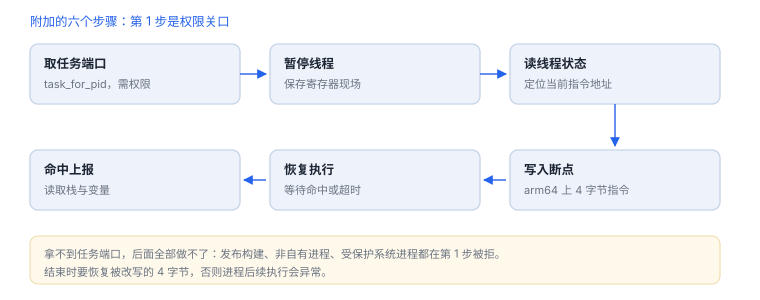

ptrace 与调试附加
附加失败通常不是工具问题，而是签名、权限或进程状态
ptrace 提供的是“让另一个进程停下来并被读写”的能力。iOS 上它受三层约束：签名是否允许调试、进程是否属于你、内核策略是否放行。理解这三层，调试失败时就不用猜。
场景 调试器显示 attached，界面却停在启动画面。附加成功只是第一步——暂停线程、读寄存器、写断点，每一步都可能卡在权限上。
1. 谁在用它
| 使用者 | 目的 | 权限来源 |
|---|---|---|
| Xcode / lldb | 断点、单步、读写内存 | 开发签名的调试能力 |
| 崩溃收集器 | 在进程内捕获异常并写报告 | 同进程内，不需要附加 |
| 反调试逻辑 | 发现“自己被别的进程控制” | 读取自身状态 |
2. 常用请求号（Darwin）
| 常量 | 值 | 作用 |
|---|---|---|
PT_TRACE_ME | 0 | 声明“我的父进程可以调试我” |
PT_CONTINUE | 7 | 让被暂停的进程继续 |
PT_STEP | 9 | 单步执行 |
PT_ATTACH | 10 | 附加到指定进程 |
PT_DETACH | 11 | 解除附加 |
PT_DENY_ATTACH | 31 | 请求“不要附加我” |

3. 一次附加的六个步骤
- 调试器取得目标进程的任务端口（相当于“操作这个进程的权能”）。
- 暂停目标的所有线程。
- 读取线程状态（寄存器），定位当前指令。
- 在目标地址写入断点指令（arm64 为 4 字节）。
- 恢复执行，命中后再次暂停并上报。
- 调试结束：恢复被改写的字节，解除附加。
第 1 步是权限关口：拿不到任务端口，后面全都做不了。
4. iOS 上的三道限制
| 限制 | 表现 | 为什么 |
|---|---|---|
| 签名能力 | 发布构建无法附加 | 开发构建才有允许调试的能力 |
| 进程归属 | 普通应用无法附加别的进程 | 任务端口需要特权 |
| 系统策略 | 系统进程默认不可附加 | 平台完整性保护 |
越狱环境会放宽后两条，但第一条仍取决于签名。这也是“为什么同一份代码在开发机能调试、在 TestFlight 上不能”的原因。
5. 为什么能检测到被附加
| 手段 | 原理 | 误报 |
|---|---|---|
| 读取进程标志 | 被调试的进程带 P_TRACED（0x800）标志 | 低 |
PT_DENY_ATTACH | 请求内核拒绝后续附加 | 中：调试器仍可能绕过 |
| 时序差 | 断点与单步会显著改变执行时间 | 高：慢设备也会误判 |
| 异常端口 | 调试器接管异常处理后，自身收不到崩溃 | 中 |
读取自身是否被调试（自有应用内）
#include <sys/sysctl.h>
#include <sys/proc.h>
bool isTraced(void) {
int mib[4] = { CTL_KERN, KERN_PROC, KERN_PROC_PID, getpid() };
struct kinfo_proc info;
size_t size = sizeof(info);
if (sysctl(mib, 4, &info, &size, NULL, 0) != 0) return false;
return (info.kp_proc.p_flag & P_TRACED) != 0;
}PT_DENY_ATTACH 只是“请求”，不是强制：具备足够权限的调试器仍能附加。把它当成提高成本的措施，而不是安全边界。
6. 一次真实排查记录：附加成功但断点不命中
- 现象：调试器显示已附加，设置的地址断点从不触发。
- 先假设地址错了：镜像基址随随机化变化，静态算出的地址在本次运行里无效。
- 改用符号断点：按函数名下断，让调试器自己做地址换算，命中后核对实际地址与静态地址的差值是否等于 slide。
- 再排除优化：若符号断点也不命中，检查该函数是否被内联进调用方——此时断点应下在调用点。
- 结论与限制：记录“断点未命中源于地址失效”，并注明该结论只对本次启动的 slide 成立。
7. 工程权衡：断点、日志与采样
| 手段 | 精度 | 侵入性 | 适用 |
|---|---|---|---|
| 断点 | 精确到指令与参数 | 暂停线程，改变时序 | 定位具体分支与返回值 |
| 日志 | 代码里写了什么才有什么 | 需要改代码，影响性能 | 长期观测、线上问题 |
| 采样 | 统计意义上的热点 | 低，但看不到单次参数 | 性能与卡顿 |
三者不是替代关系：先用采样找热点，再用断点看单次行为，最后用日志做长期验证。
8. 失败分流
| 现象 | 原因 | 查哪里 |
|---|---|---|
| attach 失败：权限不足 | 构建不带调试能力 | 签名与描述文件 |
| attach 成功但断点不命中 | 地址随 slide 变化，或代码被内联 | 用映像加载偏移换算 |
| 附加后应用立刻崩溃 | 检测到 P_TRACED 主动退出 | 检测逻辑与退出路径 |
| 断点命中但变量为空 | 优化构建，变量在寄存器或被复用 | 看寄存器与返回值 |
| 连上就超时断开 | 暂停过久触发看门狗 | 缩短停顿，减少断点 |
拒绝附加只是提高成本
PT_DENY_ATTACH 是请求，不是强制；具备足够权限的调试器仍能附加，因此它属于提高成本而非安全边界。9. 自测
- 为什么“拿到任务端口”等于拿到了操作该进程的全部能力？
P_TRACED标志位是0x800，它由谁设置？PT_DENY_ATTACH为什么只能算提高成本？- 发布构建无法被 Xcode 附加，根因在签名还是系统版本？